全部主題
OpenAI announced ChatGPT Work on July 9th, and have been furiously iterating on it ever since. It is an extraordinarily confusing and very powerful product. Here's what I've figured out about it so far. ChatGPT Work is actually two products The more interesting version of ChatGPT
Claude 的記憶打通了：聊天裡講過的專案背景，交辦給 Cowork 時直接沿用，反之亦然。記憶改成邊聊邊存，且每一則都看得到、改得動、刪得掉。
NVIDIA在發布2QFY27財報之際，傳出已同意斥資129億美元收購全球知名開放權重人工智慧（AI）模型平台Hugging Face。消息若屬實，凸顯NVIDIA不僅加強對AI領域的...
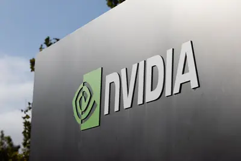
中國正將量子運算融合生成式AI，將運算效能延伸至AI決策。中國量子科技新創國光量超近期推出「玄幂」大模型，將量子運算導入大型語言模型（LLM）決策與推理流程，鎖定...
華為被美國制裁多年，在全球市場的布局卻未曾停歇。近年華為自研昇騰晶片嶄露頭角，不僅目標成為中國業者的「國產替代」方案，更在北京的外交政策支持之下，進攻海外市場...
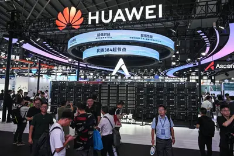
人工智慧（AI）記憶體超級榮景，正在三星電子（Samsung Electronics）內部製造新的獎酬難題。就在三星8月21日宣布，2026年股東回饋財源預估達90兆~110兆韓元（65...
人工智慧（AI）技術正快速迭代，和工業應用有關的實體AI（Physical AI）也獲得廣泛的關注，因為可重複性和可擴展性的工作都是AI的強項。全球四大會計師事務所之一的勤...
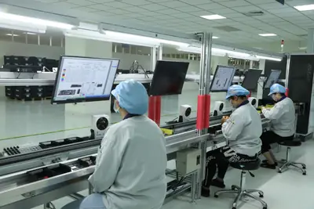
2025年初DeepSeek橫空出世，重摔NVIDIA單日股價數千億美元，2026年夏天，中國模型業者月之暗面推出Kimi K3模型，不僅把美國晶片股打趴，甚至撕裂矽谷。<b...
NVIDIA於8月25日發表專為入門級邊緣AI與機器人應用設計的Jetson Orin Nano 2運算平台，預計於2027年上半正式出貨。而在發表日當天，NVIDIA一併公布相關合作夥伴...
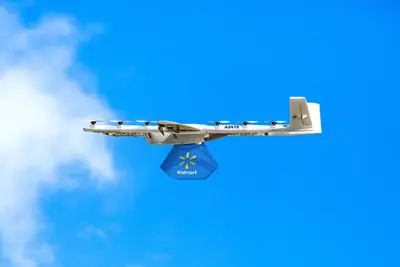
上海市政府8月26日發布《上海市戰略性新興產業發展「十五五」規畫》，到2030年，戰略性新興產業增加值達人民幣2.1兆元，工業戰略性新興產業產值佔規模以上工業總產值...
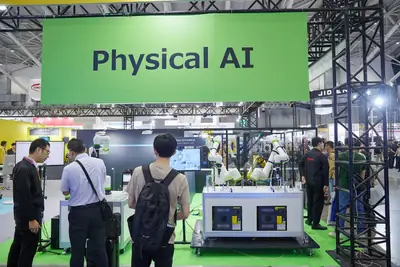
隨著兆級參數（Trillion-parameter）大型語言模型（LLM）與代理式AI（Agentic AI）逐漸成為主流，AI基礎設施的效能瓶頸，也正從單純的「算力大小」，轉向運算、記憶...
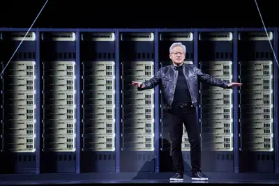
隨著生成式 AI 成為企業轉型的熱門關鍵字，職場卻也逐漸浮現一個日益明顯的怪象：企業評價的焦點不再是「成果本身 […]
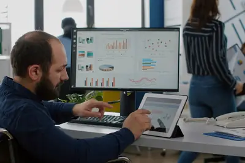
大模型（LLM）與長文本 KV Cache 持續膨脹，再加上大規模的並發推理需求，使運算的效能瓶頸由算力轉向記 […]
AI Agent（AI 代理）用得越多，企業的下一道難題也開始從怎麼導入，轉向怎麼控制成本。Uber 今年就碰上這個問題。《Fortune》5 月報導，Uber 前 4 個月便用完原先編列一整年的 AI coding 工具預算。但幾個月後，情況出現明顯反差。 Uber 近期公布，今年 2 月至 8 月，公司內每週 Agent 請求量成長 9.4 倍、活躍使用者增加 7 倍，超過 70% 的程式碼合併請求（pull request，PR）已有 Agent 參與，但整體 AI 支出自 4 月起維持穩定。若固定使用相同模型比較，每 1,000 次模型請求成本較
【科技早餐】今天精選 8 則國內外重要科技新聞。 ＊OpenAI 11 月停止向 Cursor 供應模型，SpaceX 600 億美元收購後合作破局 OpenAI 宣布，計畫終止向 AI 程式開發工具 Cursor 提供旗下模型，擬於 11 月 12 日停止服務，並表示已依合約提供最長通知時間。Cursor 母公司 Anysphere 今年由馬斯克旗下 SpaceX 以 600 億美元收購，交易已於 8 月完成。OpenAI 表示，Cursor 控制權改變後，公司依據合約條款啟動終止程序，原因是過去與馬斯克旗下企業合作時曾出現違反合約及服務條款的情況，因
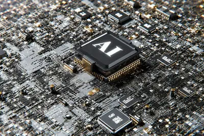
Elon Musk says a secretive new SpaceX foundry will let him cast his own turbine blades and get gas power online 18 months faster than anyone else — but it's a bet on a fuel source that's already triggering lawsuits and health studies everywhere his (and others') turbines have gon
As backlash grows over Flock's AI surveillance cameras, Texas Governor Greg Abbott has frozen state spending on them. The move came just ahead of the publication of a Texas Tribune investigation that revealed the state spent over $30 million on Flock cameras. That money was prima
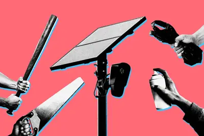
Caterpillar has spent decades putting autonomous machines to work at remote mining sites. It's now bringing that experience to AI deployment.
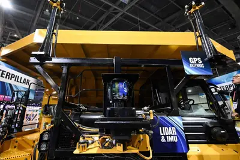
數位發展部部長林宜敬近日在2026數位政府高峰會上，說明上任近一年來，如何運用五大政策工具，推動臺灣AI產業生態圈和主權AI的進展。 去年9月1日，林宜敬從政務次長，接任數發部部長一職，他在上任媒體茶敘中強調，數位發展部將透過算力、資料、人才、行銷、資金等五大政策工具，積極建構一個健康的軟體產業生態系，確保臺灣能在AI革命中佔據領先地位。 林宜敬指出：「科技的創新、突破與發展，必須來自於民間自由而公平的競爭，政府最重要的任務是，創造一個適合 AI 產業發展的生態系。」
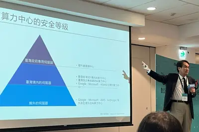
The company is testing robots on tasks that can performed by technicians.
Burnt out on wrist buzzes and notification overload? A new crop of minimalist wearables promises to collect your health data without demanding your attention.
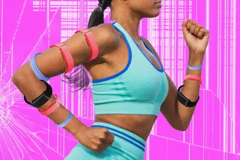
當電力從營運成本，升級為決定算力高低的戰略要角，站在供應鏈前端的電力設備商，地位也跟著翻轉。對長期被視為傳統產 […]
隨著生成式 AI 普及，人們越來越依賴其獲取資訊與分析。然而，一項發表於《Scientific Reports […]
IBM 日前宣布與 OpenAI 建立策略合作夥伴關係。雙方將透過在企業核心營運及複雜工作流程中大規模應用人工 […]